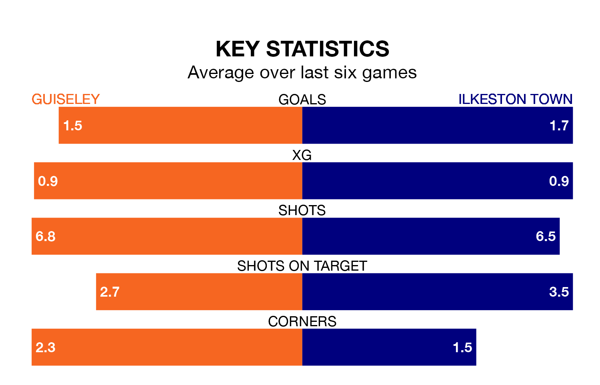

Ilkeston Town travel to Nethermoor Park looking to secure a first win in six Northern Premier League games against Guiseley on Saturday.
Ilkeston have lost three and drawn two matches since they last earned three points – against Stafford Rangers on January 27.
They face a Guiseley side who have won three and lost two over that time.
With 59 goals in 33 games so far this season, Guiseley are scoring more than average in the league with 1.8 goals per game. And they are conceding fewer than average, letting in 49 goals at a rate of 1.5 per game.
Ilkeston are also above average scorers, with 1.7 goals per game, compared to a league average of 1.6. They have conceded 1.6 goals per game.
The Lions are seventh in the table after 33 games, of which they have won 16 and drawn seven, earning 55 points.
Town are five places behind the home side in 12th, with 14 wins and five draws putting them on 47 points.
Guiseley's last match was on March 16, a 1-0 loss against Marine.
Ilkeston drew 1-1 with Hyde United last time out, also on March 16.
Updated: 10:19 (UTC), 22/03/24